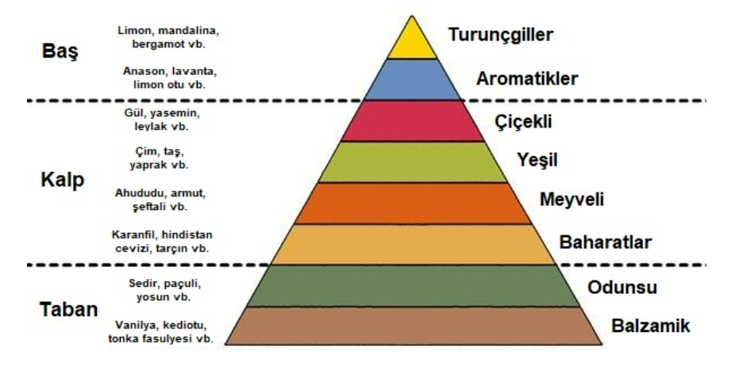

Kokunun Tarihteki Yolculuğu

Parfüm kelimesi, Latince "per fumum" yani "duman yoluyla" anlamına gelen kelimeden türemiştir. İnsanoğlunun koku tarihindeki ilk adımları, antik çağlarda tanrılara sunulan kokulu bitkilerin dumanıyla başlamıştır.
Antik Mısır & Doğu Kültürü: Mısırlılar kokulu yağları densesel törenlerde ve kraliçe Kleopatra gibi asillerin güzellik rutinlerinde kullanmıştır. Orta Çağ'da ise İbn-i Sina'nın damıtma yöntemini bulmasıyla kokular saf ve kalıcı hale gelmiştir. Modern parfümün kalbi ise daha sonra Fransa'da atmaya başlamıştır.
Modern Parfümün Doğuşu (Fransa): 17. ve 18. yüzyıllarda Fransa'nın Grasse kasabası, dünya parfümcülüğünün başkenti haline gelmiştir. Günümüzde parfüm, sadece bir kozmetik ürünü değil; kişisel tarzın, estetiğin ve duyguların en net dışa vurumu olarak kabul edilmektedir.
Parfümün Mimarisi: Koku Notaları

Üst Nota (Tepe Notası)
Parfüm sıkıldığı an duyulan ilk taze kokudur. Genellikle narenciye aromalarından oluşur ve etkisi ilk birkaç dakika sürer.
Orta Nota (Kalp Notası)
Parfümün asıl karakterini belirleyen, sıkıldıktan sonra birkaç saat boyunca teninizde kalan çiçeksi veya meyveli katmandır.
Alt Nota (Dip Notası)
Parfümün kalıcılığını sağlayan derin katmandır. Günün sonuna kadar kalan amber, misk ve vanilya gibi kalıcı esintileri içerir.